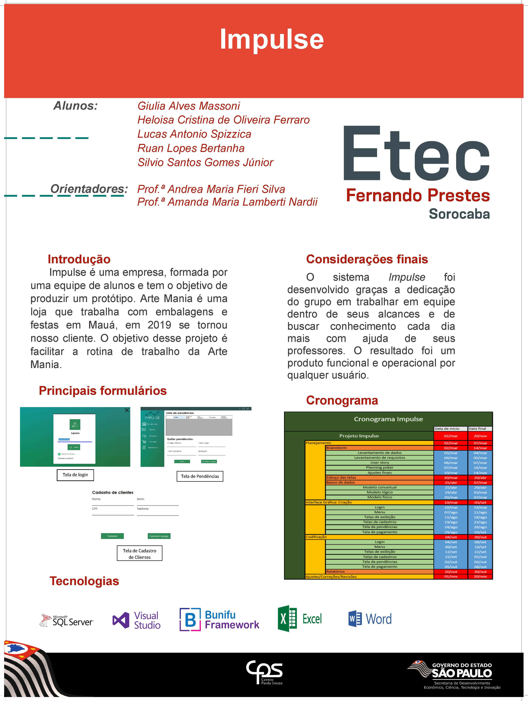
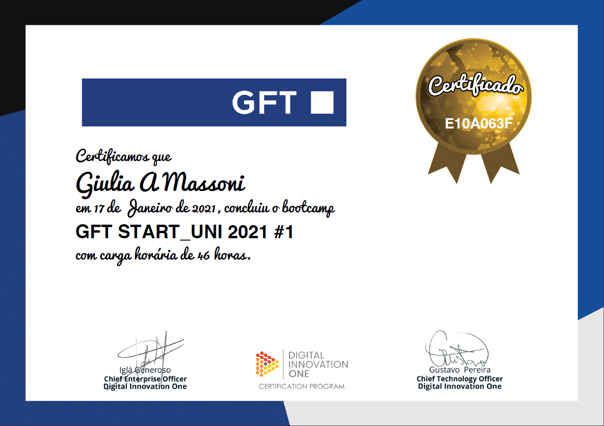

Meus estudos
Sou formada como Técnica em Informática pela ETEC Fernando Prestes onde cursei o esino médio integrado durante 3 anos. Atualmente estou cursando a faculdade de Análise e Desenvolvimento de Sistemas na FATEC Sorocaba. Além dessas duas formações principais, tenho certificados em diversos cursos da área de tecnologia desde 2009 até agora, incluindo o certificado de conclusão do Bootcamp da GFT que realizei pela Digital Innovation One.
Tenho certificados de menção honrosa em duas edições da OBMEP, e fui medalhista de bronze na edição de 2014. Minha matéria preferida sempre foi matemática, e após adquirir amor por programação durante meu técnico, decidi seguir na área de exatas.
A imagem abaixo é do banner do meu TCC, feito em 2019, na ETEC.
E este é o certificado dos 14 cursos que eu concluí no bootcamp da GFT, que foi um aprendizado enorme que recebi. Me ajudou a ver que, apesar de uma profissão difícil, é realmente o que quero fazer! 💗
